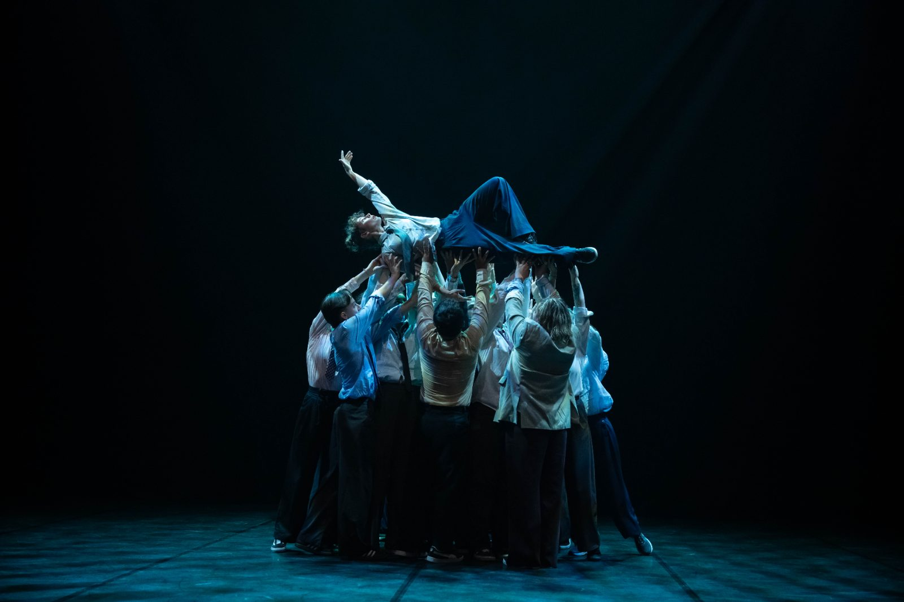
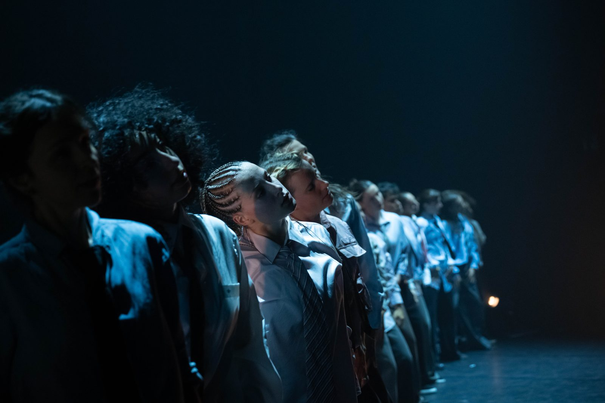

Six disciplines hip-hop, du break au contemporain urbain, pensées pour tous les âges et tous les niveaux. Encadrées par les professeurs du Cercle.
Les cours sont destinés à apprendre, développer et consolider les principales bases de la danse hip-hop. Nous mettons l'accent sur la technique, l'appropriation personnelle du mouvement et les fondamentaux en termes de ressenti et de stylistique.
Chaque séance s'articule en trois temps : un échauffement dansé, une routine chorégraphique et une restitution générale. Les techniques abordées couvrent le large spectre du hip-hop — le toucher au sol, la qualité de relâché et de contraction, l'état de flow, le graphique… autant d'éléments inhérents à l'appropriation de cette danse, vers lesquels plusieurs disciplines vous emmèneront.
Nos cours enfants s'inscrivent dans une démarche de découverte et d'amusement, sans négliger la dimension exigeante d'un cours de danse. Dispensés par des professeurs expérimentés auprès des plus jeunes, ils accueillent et forment nos prochains danseurs en herbe.
Parce que la danse doit rester un plaisir, l'apprentissage se fait par des exercices adaptés à la psychologie et à la physicalité de l'enfant, tout en stimulant sa curiosité artistique et son rapport aux autres.
Le vocabulaire debout : groove, musicalité, énergie et chorégraphie collective. Le cœur de la culture.
Footwork rapide, jacking et fluidité sur la house music. Le pied léger et le groove sans fin.
La rencontre du hip-hop et de la danse contemporaine. La signature artistique du Cercle.
Le travail au sol : fluidité, appuis et déplacements. Un pont entre hip-hop et contemporain.
Les fondamentaux des danses de rue : freestyle, énergie et expression personnelle.
Le premier contact avec la danse : jeu, coordination, écoute et plaisir du mouvement.
Au Cercle des Danseurs Disparus, chaque danseur trouve un cours adapté à son âge et à son niveau. Les groupes sont constitués par tranche d'âge afin que chacun progresse au rythme de ses camarades, dans une ambiance où l'exigence technique n'exclut jamais le plaisir.
L'éveil danse (4 – 6 ans) est le premier contact avec le mouvement : jeu, coordination, écoute et plaisir de danser ensemble. Les enfants rejoignent ensuite les cours de hip-hop enfants (6 – 8 ans, puis 8 – 11 ans), où l'on aborde les bases du break et du hip-hop par des exercices adaptés à leur physiologie. Les horaires de chaque groupe figurent sur le planning des cours.
Les ados disposent de leurs propres créneaux (11 – 13 ans et 12 – 16 ans), en hip-hop comme en urban street. Le travail se structure autour du vocabulaire technique, du freestyle et de la recherche d'une identité de danseur — avec la possibilité de monter sur scène lors des spectacles de l'école.
Les cours adultes sont ouverts à tous, sans prérequis. En débutant, on part de zéro : posture, appuis, musicalité, premiers enchaînements. En intermédiaire et en avancé, on consolide une technique déjà installée et on travaille l'interprétation, en hip-hop, house, urban contemporain ou floorwork. Beaucoup de nos danseurs adultes ont commencé sans aucune expérience. Le détail des formules est sur la page tarifs et inscriptions.
Le premier cours est toujours offert, quel que soit l'âge ou le niveau : le meilleur moyen de savoir si le Cercle est fait pour vous.

Premier cours offert et sans engagement. Découvre nos formules ou réserve directement ton essai.